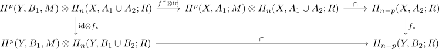

naturality of the cap product up to chain homotopy
Proposition
Let $f: (X,A_1,A_2) \rightarrow (Y,B_1,B_2)$ be a map of excisive triads. Then for the cap product
\begin{align*}
f_{*} \circ \cap \circ (f^{*} \otimes \mathrm{id}) \cong \cap \circ f_{*}: C_{\mathrm{sing}}(Y,B_1) \otimes C^{\mathrm{sing}}(X,A_1 \cup A_2) \rightarrow C^{\mathrm{sing}}(Y,B_2)
\end{align*}
are chain homotopic, i.e.

Proof
Consider the diagram
\begin{displaymath}
\begin{tikzcd}
C_{\mathrm{sing}(X,A_1;M) \otimes C^{\mathrm{sing}}(X, A_1 \cup A_2;R) \arrow[]{r}{\mathrm{id} \otimes \Delta} & C_{\mathrm{sing}}(X,A_1;M) \otimes C^{\mathrm{sing}}(X,A_1) \otimes C^{\mathrm{sing}}(X,A_2;R) \arrow[]{rd}{\mathrm{ev}}& \\
C_{\mathrm{sing}(X,A_1;M) \otimes C^{\mathrm{sing}}(X, A_1 \cup A_2;R) \arrow[]{r}{\mathrm{id} \otimes \Delta} \arrow[]{d}{f^* \otimes \mathrm{id}} \arrow[]{u}{f^* \otimes \mathrm{id}} & C_{\mathrm{sing}}(X,A_1;M) \otimes C^{\mathrm{sing}}(X,A_1) \otimes C^{\mathrm{sing}}(X,A_2;R) \arrow[]{u}{f^* \otimes \mathrm{id}} \arrow[]{d}{\mathrm{id} \otimes f_* \otimes f_*} & C^{\mathrm{sing}}(X,A_2;R) \arrow[]{d}{f_*}\\
C_{\mathrm{sing}(Y,B_1;M) \otimes C^{\mathrm{sing}}(Y, B_1 \cup B_2;R) \arrow[]{r}{\mathrm{id} \otimes \Delta} & C_{\mathrm{sing}}(Y,B_1;M) \otimes C^{\mathrm{sing}}(Y,B_1) \otimes C^{\mathrm{sing}}(Y,B_2;R) \arrow[]{r}{\mathrm{ev}}& C^{\mathrm{sing}}(Y,B_2;R) \\
\end{tikzcd}
\end{displaymath}Then
- the upper left square commutes as $\otimes$ is a bifunctor
- the right part commutes by TODO
- the lower left square commutes by pseudo diagonal to the tensor product as natural map up to chain homotopy